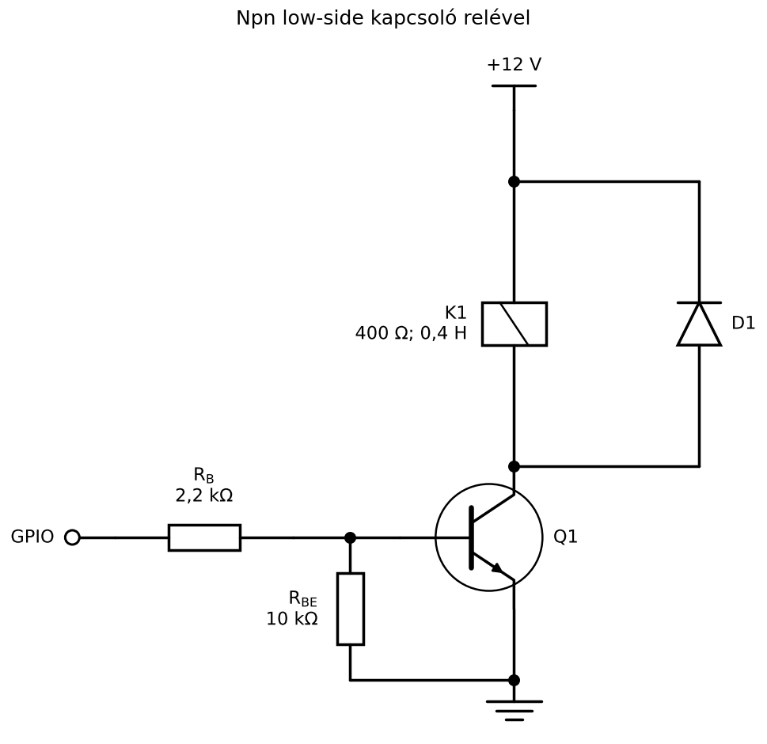
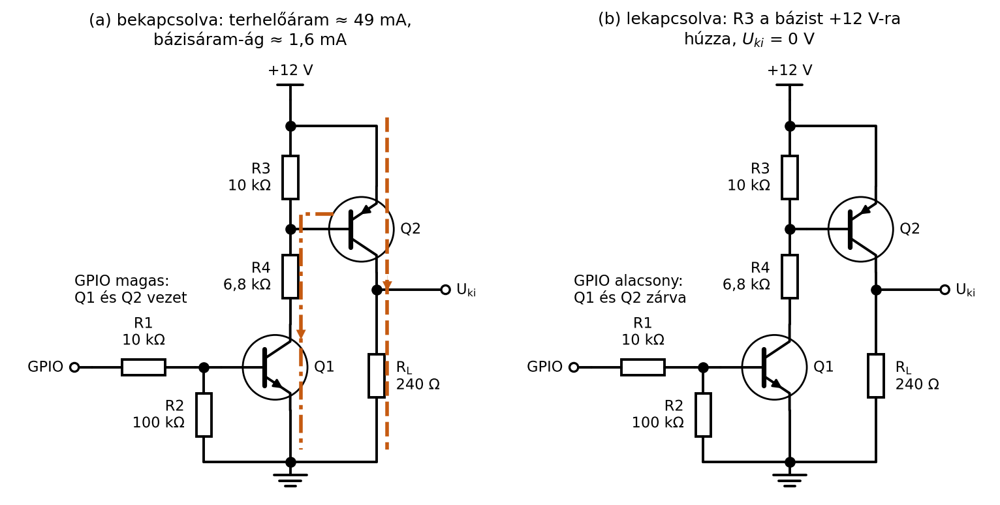
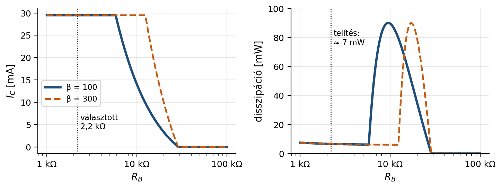

Az alfejezet végére megméretezel egy npn low-side kapcsolót (a terhelés a táp és a tranzisztor, a tranzisztor a föld felé van) a legrosszabb -val, szabadonfutó diódát illesztesz relé vagy szolenoid mellé, megmagyarázod, miért lassítja ez a lekapcsolást, és pnp high-side kapcsolót (a tranzisztor a táp és a terhelés között) tervezel npn szintillesztővel.
A szenzormodul mikrovezérlőjének egy lába mintaadat szerint legfeljebb 8 mA-t adhat, magas szintje terhelve legalább 2,9 V. A relé tekercse 12 V-on 30 mA-t vesz fel (400 Ω, 0,4 H). A láb sem a feszültséget, sem az áramot nem tudja: közé egy tranzisztor kell, amely kapcsolóként működik. Két kérdés dönti el, megbízható lesz-e: teljesen bekapcsol-e minden példány, és mi történik a tekercsben tárolt energiával a lekapcsoláskor.
Egy ideális kapcsoló vagy nyitott (áram nincs), vagy zárt (feszültség nincs rajta), ezért egyik állapotban sem melegszik. Ehhez a BJT két tartománya áll legközelebb (A BJT működése, tartományai és munkapontja): a lezárt és a telítés. A köztes, aktív tartományban egyszerre nagy a feszültség és az áram, a disszipáció pedig a tranzisztort fűti. Kapcsolóüzemben ezért a cél: bekapcsolva mindig telítés.
Az ábra alsó sora már a második kérdést mutatja. Lekapcsoláskor a tekercs árama nem ugorhat nullára (ez a visszarúgás forrása, lásd Energiatárolók veszélyei: akkumulátor, kondenzátor, induktivitás): utat keres. A D1 dióda körpályát ad neki, amelyben az áram lassan elhal.

Telítésben -t a terhelés szabja meg. Ahhoz, hogy a tranzisztor ide jusson, a bázisáramnak többet kell kérnie, mint amennyit a terhelés enged: .
Definíció. A kényszerített erősítés (forced beta) a telítésben lévő tranzisztornál; a túlvezérlési tényező .
A méretezés a legrosszabb példányra:
A tartomány hüvelykujjszabály: nagyobb mélyebb telítést, de nagyobb bázisáramot és lassabb lekapcsolást ad. Sok adatlap a értéket vagy 20 mellett garantálja; ha ez a mérvadó, a bázisáramot ehhez kell választani. A az adott kollektoráramra és hőmérsékletre vonatkozó érték legyen, ne a katalógus címsora.
Ha a bázis és a föld között lehúzó ellenállás van, annak árama is a meghajtótól jön el, ezért
ahol a meghajtó láb legkisebb magas kimeneti szintje. Kapcsolóüzemben nagyobb áramon 0,75 V körüli; ezzel számolunk. A tranzisztor disszipációja bekapcsolva:
Mértékegység: V·A = W.
Továbbvitt eredmény. A kapcsolót a legrosszabb esetre méretezzük: legkisebb meghajtófeszültség, , túlvezérlés. Ugyanez a gondolkodás vezeti a MOSFET kapcsolóként: low-side és high-side és a Mikrovezérlő GPIO illesztése terhelésekhez méretezését.
Bekapcsolás előtt vagy a mikrovezérlő újraindulásakor a láb nagyimpedanciás lehet. Ekkor a bázis „lebeg”: szivárgóáram vagy áthallás is bekapcsolhatná a tranzisztort. (tipikusan 10 kΩ nagyságrend) egyértelmű zárt állapotot ad.
Telítésben a bázis „tele van” tárolt töltéssel. A bázisáram megszüntetése után ennek még el kell fogynia, mielőtt a kollektoráram csökkenni kezd: ez a tárolási idő (storage time), nagysága adatlapfüggő, tipikusan száz nanoszekundumtól néhány mikroszekundumig. Rövidítő eszközök: az (utat ad a töltésnek), a bázisellenállással párhuzamos kis gyorsítókondenzátor, amely élváltáskor lökésszerű bázisáramot ad és vesz el, vagy a bázis–kollektor közé tett Schottky-dióda, amely nem engedi a mély telítést. A relénél ez mindegy, nagyfrekvenciás PWM-nél viszont számít.
A tekercsen . Ha a tranzisztor hirtelen megszakítja az áramot, a óriási negatív, a kollektor feszültsége a táp fölé ugrik, amíg valami nem engedi tovább az áramot – akár a tranzisztor letörése. A tárolt energia .
A szabadonfutó dióda (flyback diode) a tekercsre antiparallel kapcsolva a lekapcsolás után vezet; a kollektor csak -ig emelkedik. A tekercs árama ekkor a ellenfeszültséggel és a saját ellenállásával csökken. Ha a hurokra ható állandó ellenfeszültség (dióda: ), a kezdeti érték–végérték–időállandó módszerrel (RC és RL töltés–kisütés, időállandó) , a „végérték” , és az áram nullára csökkenésének ideje:
Nagyobb gyorsabb lekapcsolás. Ezért a dióda mellé sorba tehetünk egy Zener-diódát (Zener-dióda, LED és fotodióda): . Az ár: a kollektor csúcsa
amelynek tartalékkal kell a tranzisztor határfeszültsége alatt maradnia. A gyorsaság és a feszültségigénybevétel kompromisszum.
Gondolkodj előre: ha -t 0,7 V-ról 15,7 V-ra emeljük, hányadára csökkenhet a lekapcsolás ideje? Tippelj, a számpélda megadja.
Továbbvitt eredmény. Induktív terhelésnél az áramnak utat kell adni: szabadonfutó dióda alacsony kapcsolási feszültséget, de lassú () áramfogyást ad; nagyobb ellenfeszültség gyorsít, de feszültséget kér. Erre épít a Biztonságos működési tartomány, lavina és induktív terhelés és a 3. záróprojekt: MOSFET-es meghajtó induktív terheléshez.
Néha a terhelés egyik pontja fixen a földön kell maradjon (például egy érzékelő tápját kapcsoljuk). Ekkor a kapcsoló a táp és a terhelés közé kerül. A pnp emittere a +12 V-on van; a tranzisztor akkor nyit, ha a bázisát az emitter alá húzzuk kb. 0,75 V-tal. A 3,3 V-os láb erre nem képes: a bázist 12 V-ra kellene emelni a lezáráshoz. Ezért egy npn szintillesztő (Q1) húzza a bázist a föld felé.

R3 a pnp bázis–emitter lehúzója (itt „felhúzó”), R4 a pnp bázisáramát korlátozza. A pnp bázisárama:
R4 a tápfeszültséggel együtt változik: a legkisebb tápnál ellenőrizd a telítést, a legnagyobbnál a disszipációt.
A Darlington-pár két tranzisztor úgy összekötve, hogy az elsőé a második bázisát hajtja; a -k kb. összeszorzódnak (ezres nagyságrend), de kb. 1,3 V, a telítési feszültség legalább 0,9 V körüli, és lassú. Teljesítmény-BJT-k és IGBT-k a nagy áramok világa, itt nem tárgyaljuk őket.
A BJT folyamatos bázisáramot kér, és telítésben néhány tized volt esik rajta. 1 A-es szolenoidnál és már 60 mA bázisáramot igényelne, több, mint amennyit a láb ad. A MOSFET (MOSFET kapcsolóként: low-side és high-side) gate-je egyenáramot gyakorlatilag nem vesz fel, vezetéskor pedig ellenállásként viselkedik (a szenzormodul MN1-je 3,3 V-os meghajtáshoz 50 mΩ-os tervezési értékkel). Kis áramhoz és egyszerű, olcsó kapcsoláshoz a BJT jó; nagy áramhoz, kis veszteséghez, PWM-hez általában a MOSFET.
Továbbvitt eredmény. A high-side kapcsoló vezérlőfeszültsége a tápsínhez viszonyul, ezért alacsony logikai szintről szintillesztő kell: egy földelt emitterű segédtranzisztor húzza a vezérlőelektródát. MOSFET kapcsolóként: low-side és high-side esetén ugyanez a minta tér vissza.
Adatok: GPIO magas szint 2,9 V, , (mintaadat), , , .
A „gondolkodj előre” válasza: kb. ötödére (2,9 ms → 0,57 ms). A tárolt energia mindkét esetben ; diódánál ennek nagy része a tekercs ellenállásán fűt, Zenerrel a nagyobb részét a Zener veszi fel. Relénél a gyorsabb áramfogyás gyorsabb elengedést és kisebb érintkezőkopást jelent.
from elkit import devices as dv, units
sw = dv.bjt_switch(2.9, 30e-3, beta_min=100, overdrive=3, r_pull_down=10e3)
print(f"R_B <= {units.fmt(sw.r_b_max, 'Ω')}, választva {units.fmt(sw.r_b, 'Ω')}")
print(f"I_B = {units.fmt(sw.i_b, 'A')}, beta_f = {sw.beta_forced:.1f}, "
f"P_D = {units.fmt(sw.p_d, 'W')}")R_B <= 2.21 kΩ, választva 2.2 kΩ
I_B = 902 µA, beta_f = 33.2, P_D = 6.68 mWA lekapcsolást időlépéses szimulációval nézzük; a bekapcsolt tranzisztort 6,7 Ω-os ellenállás helyettesíti (ez ad kb. 0,2 V-ot 30 mA-nél):
from elkit import transient as tr
def lekapcsolas(u_z=None, t_ki=1e-3):
c = tr.Circuit()
c.add_vsource("U1", "vcc", "0", 12.0).add_resistor("RL", "vcc", "a", 400.0)
c.add_inductor("L1", "a", "k", 0.4)
c.add_switch("S1", "k", "0", lambda t: t < t_ki, r_on=6.7)
if u_z is None:
c.add_diode("D1", "k", "vcc", u_f=0.7)
else:
c.add_diode("D1", "k", "m", u_f=0.7)
c.add_diode("Z1", "vcc", "m", u_f=0.7, u_br=u_z)
r = c.simulate(t_ki + 5e-3, 1e-6, initial="dc")
i, t = r.i("L1"), r.t
utan = t > t_ki
t0 = t[utan][(i[utan] < 1e-5).argmax()] - t_ki
return i[0], r.v("k")[utan].max(), t0
for nev, uz in (("dióda", None), ("dióda+15 V", 15.0)):
i0, u_cs, t0 = lekapcsolas(uz)
print(f"{nev:11s} I0={units.fmt(i0, 'A')} U_CE,max={u_cs:.1f} V t0={units.fmt(t0, 's')}")dióda I0=29.5 mA U_CE,max=12.7 V t0=2.88 ms
dióda+15 V I0=29.5 mA U_CE,max=27.7 V t0=560 µsA szimuláció a kézi számolással egyezik; a kis különbség abból
adódik, hogy itt a bekapcsolt tranzisztoron is esik feszültség, ezért
csak 29,5 mA. Az analitikus megoldás az
elkit.power.turn_off függvényben is megvan. Védelem nélkül
a csúcs csak elvi: 100 pF parazita kapacitással kb.
adódna, vagyis a tranzisztor biztosan letör.

A lap a bekapcsolt állapot -jét figyelembevételével (29,5 mA) számolja, ezért ott diódával 2,88 ms.
elkit.power.turn_off eredményét (csúcs,
)
kiírja a 0, 5, 10, 15 és 18 V-os Zener-feszültségekre, és kiválasztja a
legnagyobb
-t,
amelynél
.Kapcsolóként a BJT lezárt vagy telített. A telítést a legrosszabb esetre biztosítjuk: , , a bázisellenállás a legkisebb meghajtófeszültségből és az áramából adódik. zárva tartja a lebegő lábat. Induktív terhelésnél az áramnak utat kell adni: szabadonfutó diódával , de az áram lassan fogy, ; Zener sorba kötve gyorsít, több feszültséget kér. Pnp high-side kapcsolóhoz npn szintillesztő kell. Nagy áramhoz és PWM-hez általában MOSFET a jobb választás.
1. feladat. ; , E24: 3,0 kΩ. Ekkor , .
2. feladat. , , – aktív tartomány. . A 2,3 mA messze a meghúzáshoz szükséges áram alatt van: a relé nem húz meg.
3. feladat. ; . , E24: 1,8 kΩ. Disszipáció 12 V-on: ; 16 V-on: . Egy 0,25 W-os ellenállás tartalékkal megfelel. A bázisáram-ág árama 6 mA, amit Q1-nek kell elvezetnie: Q1 -jára is ellenőrizni kell.
4. feladat. , a 40 V-os határ felett: nem megfelelő. A 32 V-os korlát és 30 V táp mellett lenne, vagyis a Zener nem ad érdemi gyorsítást. Lehetőségek: csak dióda (csúcs 30,7 V, megfelel, de lassú), nagyobb feszültségű (pl. 60 V-os) tranzisztor a Zenerrel, vagy a bemeneti tranziens korlátozása (Tápbemeneti védelmek: biztosíték, polaritás, túlfeszültség, áramlökés).
5. feladat.
from elkit import power as pw
jo = []
for u_z in (0, 5, 10, 15, 18):
m = "dióda" if u_z == 0 else "dióda+zener"
r = pw.turn_off(m, u_z=u_z)
print(f"U_Z={u_z:2d} V U_CE,max={r.u_switch_peak:.1f} V t0={units.fmt(r.t_zero, 's')}")
if r.u_switch_peak <= 32:
jo.append(u_z)
print("legnagyobb megfelelő U_Z:", max(jo), "V")U_Z= 0 V U_CE,max=12.7 V t0=2.9 ms
U_Z= 5 V U_CE,max=17.7 V t0=1.13 ms
U_Z=10 V U_CE,max=22.7 V t0=752 µs
U_Z=15 V U_CE,max=27.7 V t0=568 µs
U_Z=18 V U_CE,max=30.7 V t0=496 µs
legnagyobb megfelelő U_Z: 18 VA legnagyobb vizsgált Zener (18 V) még belefér a korlátba, és a lekapcsolás kb. hatszor gyorsabb, mint diódával.